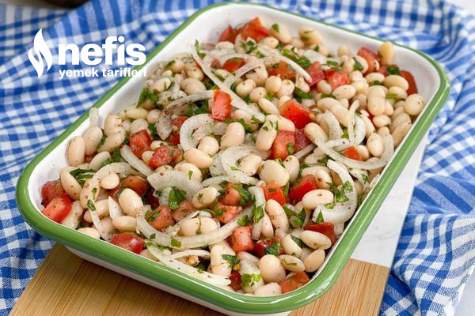

Kaç Kişilik : 2-4 Kişilik Hazırlanma Süresi : 10 Dakika
Fasulye Piyazı Tarifi İçin Malzemeler
- 1 kutu haşlanmış fasulye
- 1 adet orta boy kuru soğan
- 1 adet domates
- 8-9 dal maydanoz
- 4 yemek kaşığı zeytinyağı
- 2 yemek kaşığı elma sirkesi
- 1 yemek kaşığı limon sosu
- 1 tatlı kaşığı sumak
- 1 çay kaşığı tuz
Fasulye Piyazı Tarifi Nasıl Yapılır?
- Öncelikle kabuğunu soyduğumuz soğanı piyazlık olacak şekilde doğrayalım.
- Daha sonra domatesi küçük küpler halinde doğrayalım.
- Maydanozları yıkadıktan sonra ince ince kıyalım.
- Uygun bir karıştırma kabına haşlanmış fasulyeyi alalım.
- Üzerine doğradığımız soğanı, maydanozu, domatesi, tuzu, sumağı, elma sirkesini, limon sosunu, zeytinyağını ekleyerek güzelce karıştıralım.
- Hazır olan piyazı servis tabağına alalım ve servis edelim.